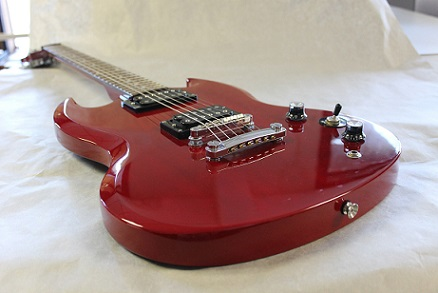
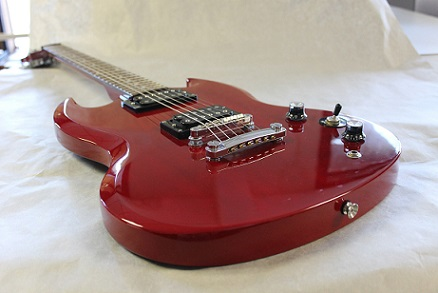

SG
Uma curiosidade sobre a SG é que, apesar da captação idêntica a da Les Paul, o timbre desse instrumento é bastante diferente. O modelo foi consagrado por grandes guitarristas, a exemplo de Tony Iommi (Black Sabbath) e Angus Young (AC/DC).
Uma curiosidade sobre a SG é que, apesar da captação idêntica a da Les Paul, o timbre desse instrumento é bastante diferente. O modelo foi consagrado por grandes guitarristas, a exemplo de Tony Iommi (Black Sabbath) e Angus Young (AC/DC).
